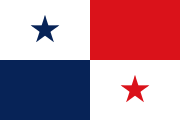
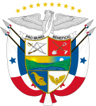

Símbolos Patrios

La Bandera Nacional fue diseñada por Manuel E. Amador y
confeccionada por María Ossa de Amador. Consiste en un rectángulo
dividido en cuatro cuarteles, uno representa el partido
Conservador con el color azul, el color rojo hace referencia al
partido Liberal, el blanco representa la paz y unidad que debe
imperar en la nación. La estrella roja indica la autoridad y ley,
y la azul simboliza la pureza y honestidad que norma la civilidad
de la patria panameña.

El Escudo Nacional fue ideado por Don Nicanor Villaláz e
interpretado artísticamente por don Max Lemm. Este diseño enmarca
el suceso de la historia panameña, desde la separación de Panamá
de Colombia en 1903 hasta el reflejo de la riqueza, el progreso,
la naturaleza y la lucha que protagonizaron cientos de panameños
en esa época.
Historia
Antes de la llegada de los europeos, las tierras de Panamá estaban
habitadas básicamente por pueblos chibchenses que hablaban lenguas
chibchas del grupo ístmico. Estos pueblos formaban grupos diversos
por lo que no constituían una unidad política unificada.
Cristóbal Colón fue el primer explorador español en alcanzar tierra
firme americana, en su tercer viaje, pero, no el primero en arribar
a territorio panameño. Esto correspondió a Rodrigo Galván de
Bastidas, natural de la ciudad de Sevilla.
Como Colón había sido apresado en su tercer viaje, los Reyes
Católicos eliminaron la exclusividad de la empresa para él (las
Capitulaciones de Santa Fe). Por esta razón, Bastidas solicitó
licencia para explorar. En 1501, el sevillano recorrió las costas de
Venezuela y el norte de Colombia, hasta el Golfo de Urabá.
Posteriormente bordeó la costa del istmo panameño, y llegó casi
hasta el emplazamiento actual del canal de Panamá.
En este trayecto, los exploradores no fundaron ningún pueblo ni se
adentraron en el territorio. Por medio de trueques con los pueblos
indígenas, Bastidas acumuló oro y palo de Brasil (apreciado por su
madera y como fuente de un tinte). A diferencia de otros
conquistadores, Bastidas se dedicó antes a comerciar que a saquear
las riquezas o a esclavizar a los indígenas.
Las embarcaciones de Bastidas se vieron atacadas por el molusco
llamado broma. Este es un molusco de unos 20 cm de longitud, que
excava galerías en las maderas sumergidas en agua de mar, como los
cascos de los barcos y los muelles. Por la razón anterior, varias
naves de Bastidas naufragaron camino a la isla La Española, y perdió
gran parte de sus riquezas.
Al llegar a dicho territorio, el gobernador Francisco de Bobadilla
enjuició a Bastidas por haber violado la prohibición que tenía de
arribar a la isla. En su contrato con la Corona española, Bastidas
se había comprometido a lo anterior y a no negociar con los
indígenas. Ambas cosas fueron incumplidas. Bobadilla envió a
Bastidas hacia España, donde se le siguió juicio, pero fue absuelto.
Posteriormente, incluso se le reconoció una pensión vitalicia sobre
las riquezas extraídas de Urabá.
El 10 de octubre de 1502, en su cuarto viaje, Cristóbal Colón llegó
a la costa atlántica del istmo, en las actuales provincias de Bocas
Del Toro y Veraguas. El 2 de noviembre, llegó a una bahía en la
actual provincia de Colón, a la que bautizó como el nombre de
Portobelo o Puerto Bello.